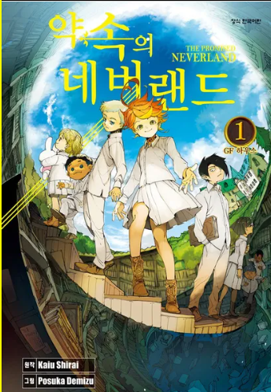

★★★★★
슈타인즈 게이트
강철의 연금술사
진격의 거인
★★★★
나만이 없는 거리
주술회전
귀멸의 칼날
암살교실
무직전생
데스노트
장송의 프리렌
최애의 아이
메이저
봇치 더 락

86 -에이티식스-
헌터x헌터
★★★
모브 사이코 100
원펀맨
오버로드
하이큐
마슐
전생했더니 슬라임이었던 건에 대하여
소드 아트 온라인
이세계 약국
Re:제로부터 시작하는 이세계 생활

약속의 네버랜드
스파이x패밀리
아픈건 싫으니까 방어력에 올인하려고 합니다
이 멋진 세계에 축복을
★★
단다단
방패 용사 성공담
자박소년 하나코군
어둠의 실력자가 되고 싶어서
최강 음양사의 이세계 전생기
★
도쿄구울 : re